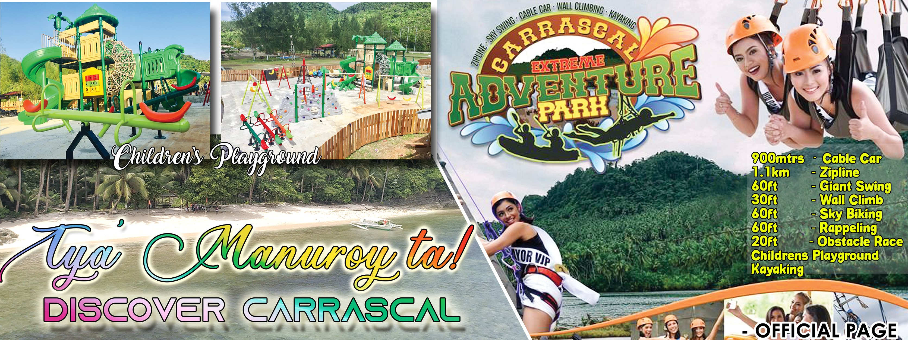
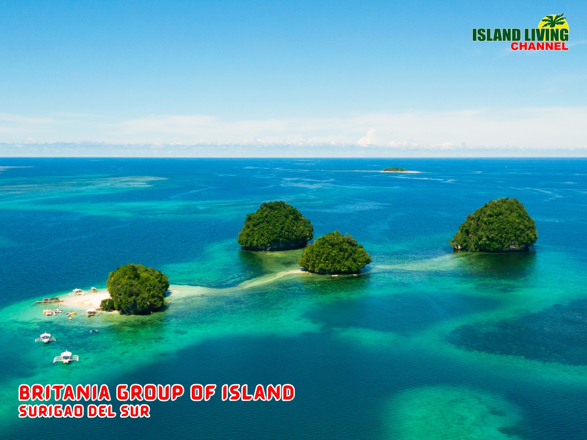
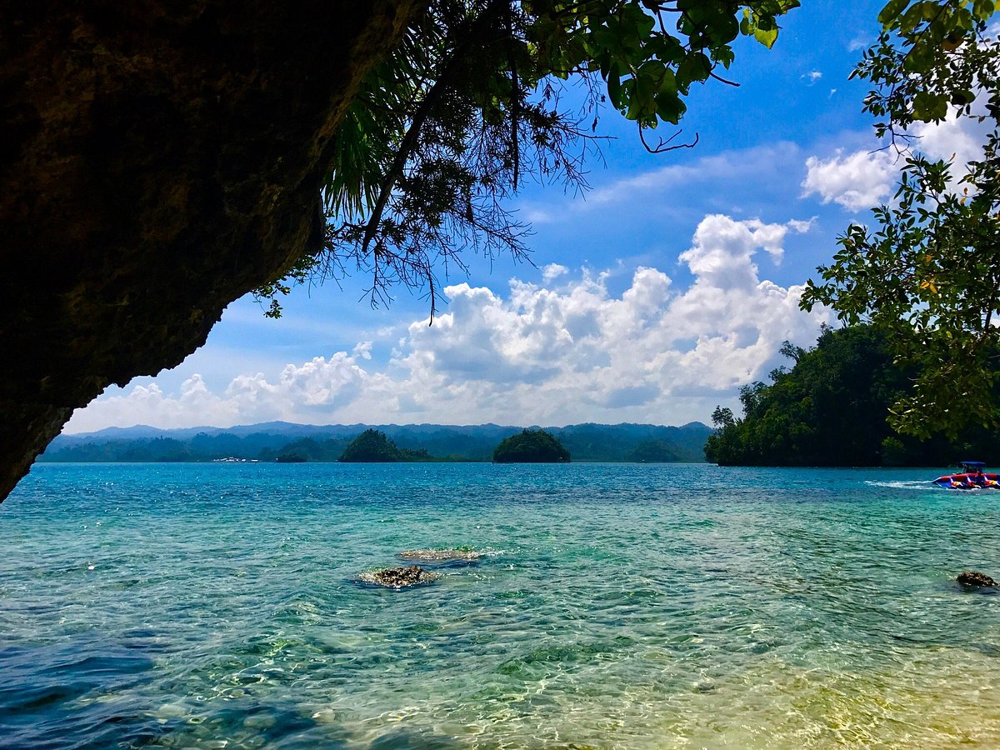
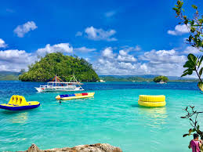
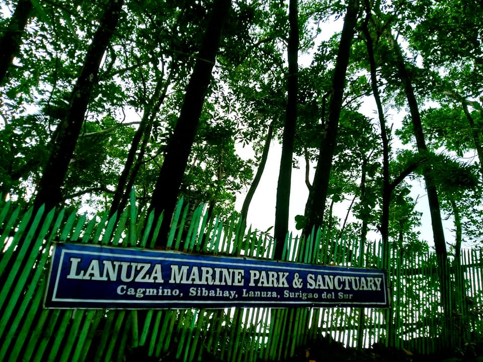
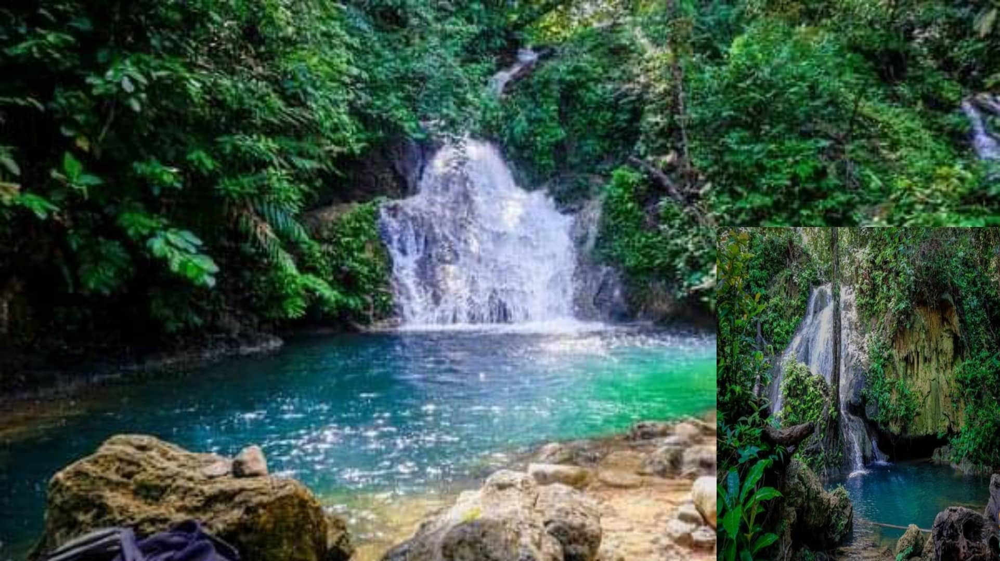

Surigao Del Sur is a paradise for thrill-seekers and nature lovers alike. From ziplining over lush forests to diving in pristine coral reefs, every adventure here is set against some of the most spectacular natural backdrops in the Philippines.

Located in the northernmost town of Carrascal, this is the only extreme adventure park in the Caraga Region. It features a 1.1-kilometer zipline, a 900-meter dual cable car, two giant swings, and various watersports activities. It is the ultimate destination for adrenaline seekers visiting Surigao del Sur.
More adventures await you here!



Explore the 24 coral islands and islets of the Britania Group in San Agustin through an unforgettable island hopping adventure. Hop between Naked Island, Boslon Island, Hagonoy Island, and Panglangagan Island in a single day. Boats are available at the Britania port for hire, with shared options available for solo travelers.
There is still more adventure waiting!

The Lanuza Marine Park and Sanctuary covers over 111 hectares of protected marine waters teeming with diverse aquatic life, including the endangered Philippine sea turtle or pawikan. Its pristine coral reefs make it one of the best snorkeling and diving spots in the entire province of Surigao del Sur.
One more activity you should not miss!

The Tago River Nature Adventure, fondly called "TaRA NA!", is located in Barangay Purisima, Tago. It offers a wide range of activities including river kayaking, canoeing through lush mangrove areas, and cave exploration. It is one of the province's emerging eco-tourism destinations built around the beauty of its natural river system.